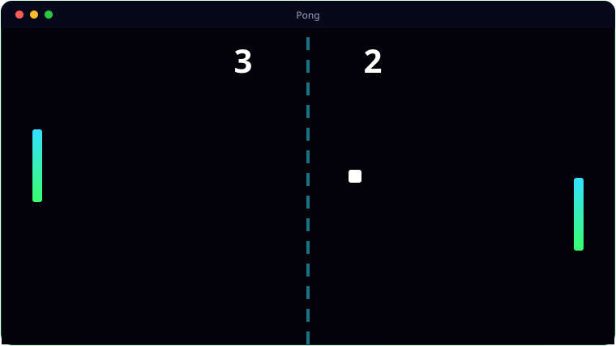

See It In Action
A look inside Pong.

What It Does
Everything Pong brings to the table.
🤖
Three Modes
Demo (AI vs AI), 1 Player vs AI with W/S, and 2 Players local with W/S and the arrow keys.
🖥️
Real Screensaver
Installs as a .scr and honours the Windows /s, /c and /p screensaver arguments.
🔲
Fullscreen by Default
Launches fullscreen, with F11 to toggle a window at any time.
🔊
Synthesised Sound
Classic blips generated from raw buffers — no sound files needed.
🪟
Menu From Demo
Press any key in the demo to open the mode-select menu; Esc drops back to the screensaver.
Get Ready
System requirements.
💻
Minimum
- OS: Windows 10 (64-bit) or Windows 11
- CPU: Dual-core, 2.0 GHz
- Memory: 4 GB RAM
- Graphics: Any DirectX 11 / integrated GPU
- Storage: 250 MB + space for your files
- Display: 1280×768 or higher
🚀
Recommended
- OS: Windows 11 (64-bit)
- CPU: Quad-core, 3.0 GHz
- Memory: 8 GB RAM
- Graphics: Dedicated GPU (optional)
- Storage: SSD with a few GB free
- Display: 1920×1080 or higher
Under the Hood
The details.
| Engine | Python 3.12 + Pygame 2.6.1 (single file) |
| Modes | Demo · 1 Player · 2 Players |
| Screensaver | Installs to System32 as .scr, supports /s /c /p |
| Platform | Windows 10 / 11 |
Get Pong.
1972-style Pong that doubles as a Windows screensaver.
⬇ Download PongPong_Setup.exe / pong.scr · free · Windows 10/11